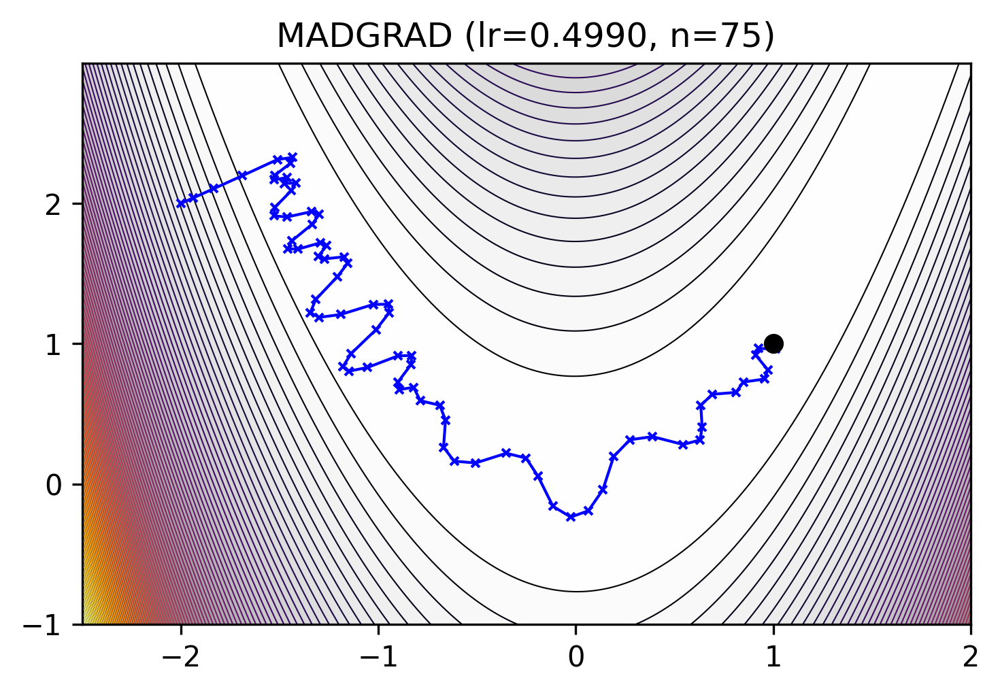

mlx_optimizers.MADGRAD#
- class MADGRAD(learning_rate: float | Callable[[array], array], momentum: float = 0.9, weight_decay: float = 0, eps: float = 1e-06)#
Momentumized, Adaptive, Dual averaged GRADient [1].
\[\begin{split}s_0 &= 0, v_0 = 0, x_0 = \theta \\ \lambda_t &= \eta \sqrt{t + 1} \\ s_{t+1} &= s_t + \lambda_t g_t \\ v_{t+1} &= v_t + \lambda_t g_t^2 \\ z_{t+1} &= x_0 - \frac{s_{t+1}}{\sqrt[3]{v_{t+1}} + \epsilon} \\ \theta_{t+1} &= (1 - \beta) \theta_t + \beta z_{t+1}\end{split}\][1] Defazio, Aaron, and Samy Jelassi, 2022. A momentumized, adaptive, dual averaged gradient method. JMLR 23.144 (2022): 1-34. https://arxiv.org/abs/2101.11075 facebookresearch/madgrad
- Parameters:
learning_rate (float or callable) – The learning rate \(\eta\).
momentum (float, optional) – The momentum coefficient \(\beta\). Default:
0.9weight_decay (float, optional) – The weight decay coefficient. Default:
0.0eps (float, optional) – The term \(\epsilon\) added to the denominator to improve numerical stability. Default:
1e-6
Methods
__init__(learning_rate[, momentum, ...])apply_single(gradient, parameter, state)To be extended by derived classes to implement the optimizer's update.
init_single(parameter, state)To be extended by the children classes to implement each optimizer's state initialization.